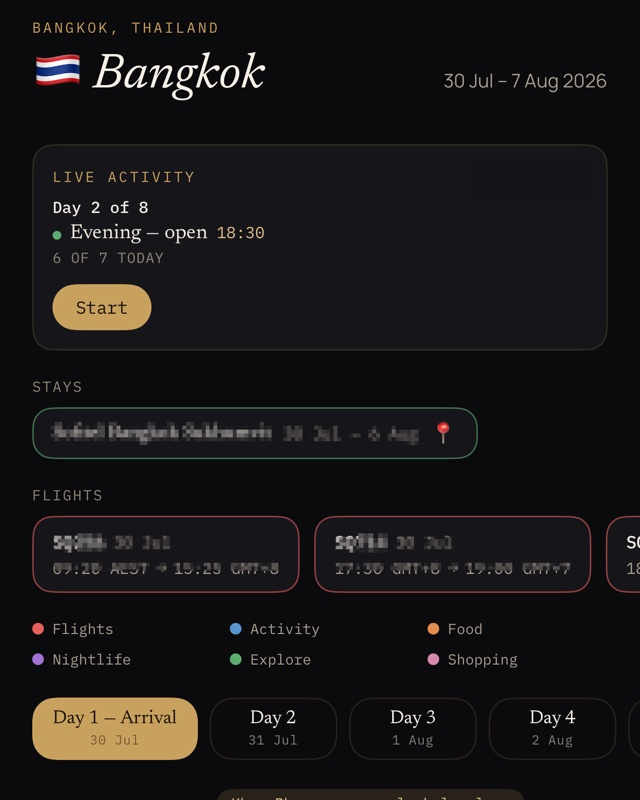
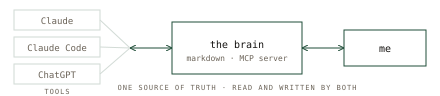
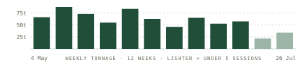
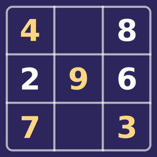
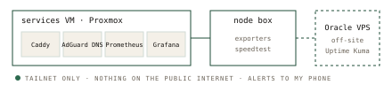
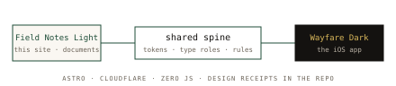

Field notes · est. 2026 · Brisbane, AU
A travel app I built and shipped, a knowledge base my AI tools read and write, a fitness pipeline I actually review every week. This site is the portfolio and the build log behind it: what I made, the decisions and trade-offs, and what I'd do differently.
A native iOS/SwiftUI travel planner, built on my own Cloudflare Workers + D1 API.
+ the story of a flight search becoming a fully fledged iOS app

02A plain-markdown knowledge base with an MCP server on top, so my AI tools and I read the same source of truth.

03A local-first pipeline pulling training, sleep and nutrition into one SQLite hub, reviewed weekly through MCP.


04A minimalist SwiftUI Sudoku, built end-to-end to learn the platform properly.
A two-box setup in the study: Proxmox, DNS, a reverse proxy, and Prometheus/Grafana watching the lot — learned from the BIOS up.

06Astro on Cloudflare, zero JS, a design system shared with Wayfare. Built in the open; the rejected directions are in the repo.

The very first thing I ever asked Claude to do was find me flights to Bangkok. Two months later, that throwaway prompt has somehow become a native iOS travel app.
next up — QuietNine: the launch story